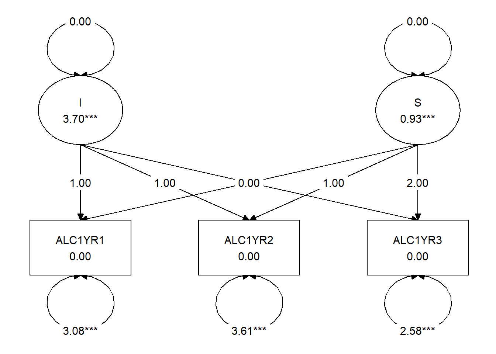
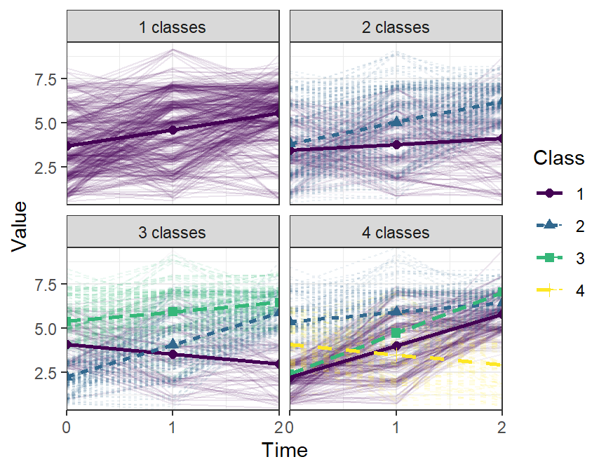

3.1 Exercise 1: Latent Growth (Mixture) Modeling
3.1.1 1a. Latent Class Growth Models.
Set up the growth curve model as depicted in Figure 1 in Mplus, using the | notation. Use the file DDS8_1.dat for this.

Latent Growth model for alcohol
First, load the file DDS8_1.dat into the R environment. For convenience’s sake, rename the columns of the data object to something a human would understand:
data <- read.table("DDS8_1.dat", na.strings = -99)
names(data) <- c("ALC1YR1", "ALC1YR2", "ALC1YR3",
"ALCPROB5", "AGE1", "GENDER1")Use the function createMixtures to define the latent class growth model as displayed in Figure 1. To see how the function createMixtures() works, type its name, select it, and press F1.
You can specify the model using the “|” notation. Constrain the variance of the intercept and slope factors to be equal to zero, using the Mplus syntax i@0; s@0;.
In createMixtures, you can specify the overall model using the argument model_overall = "i s | ALC1YR1@0 ALC1YR2@1 ALC1YR3@2; i@0; s@0;". The double spaces are converted to newline characters, which results in a nicely formatted Mplus file.
Request 1 to 6 classes, by specifying the argument classes = 1:6 for createMixtures. Request tech8, tech11 and tech14 output by specifying the argument: OUTPUT = "tech8 tech11 tech14;".
To run the analysis, add the argument run = 1L to the createMixtures() call.
Make sure to store the resulting output in an object, the same way you stored the data in an object called data when using the function read.table().
Click to show answers
The resulting syntax should look like this:
results_1a <- createMixtures(
classes = 1:6,
filename_stem = "1a",
model_overall = "i s | ALC1YR1@0 ALC1YR2@1 ALC1YR3@2;
i@0; s@0;",
rdata = data,
usevariables = c("ALC1YR1", "ALC1YR2", "ALC1YR3"),
OUTPUT = "tech8 tech11 tech14;",
run = 1L)The function createModels() can run all of the analyses in batch, thus taking a lot of work out of your hands.
The function essentially performs three steps:
- Create Mplus syntax for each of the latent class models based on
model_overallandmodel_class_specific - Use the function
mplusObject()to turn this syntax into a model that can be evaluated - Use the function
mplusModeler()to create the Mplus.inpfiles, run them, and return the results
If you use MplusAutomation for other types of models, you won’t need createMixtures(). Instead, you can use mplusObject() and mplusModeler().
To see what the function createMixtures() is doing, you should inspect each of the automatically generated input files (.inp). You can even run one by hand.
Finally, print a summary table to the R console by calling mixtureSummaryTable() on the results object.
Click to show answers
The resulting syntax should look like this:
mixtureSummaryTable(results_1a)| Title | Classes | AIC | BIC | aBIC | Entropy | T11_VLMR_PValue | T11_LMR_PValue | BLRT_PValue | min_N | max_N | min_prob | max_prob |
|---|---|---|---|---|---|---|---|---|---|---|---|---|
| 6 classes | 1 | 4938 | 5020 | 4957 | 0.76 | 0.00 | 0.00 | 0 | 466 | 466 | 1.00 | 1.00 |
| 5 classes | 2 | 4962 | 5032 | 4978 | 0.75 | 0.11 | 0.12 | 0 | 144 | 322 | 0.86 | 0.95 |
| 4 classes | 3 | 4971 | 5029 | 4984 | 0.80 | 0.01 | 0.01 | 0 | 65 | 262 | 0.86 | 0.96 |
| 3 classes | 4 | 4995 | 5040 | 5005 | 0.82 | 0.00 | 0.00 | 0 | 39 | 237 | 0.65 | 0.94 |
| 2 classes | 5 | 5191 | 5224 | 5199 | 0.73 | 0.00 | 0.00 | 0 | 34 | 204 | 0.73 | 0.92 |
| 1 classes | 6 | 5339 | 5360 | 5344 | NA | NA | NA | NA | 32 | 147 | 0.69 | 0.91 |
3.1.1.1 Visualization
To verify that the estimated model corresponds to the Figure above, you can use the SEM graphing package tidySEM.
This flexible package produces fully customizable plots based on the R graphing package ggplot2 for Mplus (and lavaan) models.
If you want to make publication quality graphs, here is an online tutorial for graph customization.
The script below demonstrates how to plot a model using tidySEM.
install.packages("tidySEM")
library(tidySEM)
lo <- get_layout("I", "", "S",
"ALC1YR1", "ALC1YR2", "ALC1YR3", rows = 2)
graph_sem(results_1a[[1]], layout = lo, angle = 179)
3.1.2 1b. Increasing random starts
These models use random starting values. Several independent random starts are made, to ensure that the model converges on the proper solution. The default is 20 random sets of starting values, of which 4 are run to completion. Inspect the output, and look carefully if the model estimation has converged, especially for the larger number of classes. Look for warning and error messages, make sure you understand what they are telling you.
The STARTS option is used to specify the number of initial random starting values and final stage optimizations. Now, increase the number of starts to ensure proper convergence. For createMixtures, the argument is ANALYSIS = "STARTS = .. ..;".
Click to show answers
The resulting syntax should look like this:
results_1b <-
createMixtures(classes = 1:6,
filename_stem = "1b",
model_overall = "i s | ALC1YR1@0 ALC1YR2@1 ALC1YR3@2;
i@0; s@0;",
ANALYSIS = "STARTS = 50 10;",
rdata = data,
usevariables = c("ALC1YR1", "ALC1YR2", "ALC1YR3"),
OUTPUT = "tech8 tech11 tech14;",
run = 1L)Make a mixture summary table to compare the fit information of the models with 1-6 classes, with the increased number of starts, using mixtureSummaryTable(). Also open the output files, and inspect the estimates in each class. Which model do you prefer, and why?
Click to show answers
The resulting syntax should look like this:
mixtureSummaryTable(results_1b)| Title | Classes | AIC | BIC | aBIC | Entropy | T11_VLMR_PValue | T11_LMR_PValue | BLRT_PValue | min_N | max_N | min_prob | max_prob |
|---|---|---|---|---|---|---|---|---|---|---|---|---|
| 6 classes | 1 | 4938 | 5020 | 4957 | 0.76 | 0.00 | 0.00 | 0 | 466 | 466 | 1.00 | 1.00 |
| 5 classes | 2 | 4962 | 5032 | 4978 | 0.75 | 0.11 | 0.12 | 0 | 144 | 322 | 0.86 | 0.95 |
| 4 classes | 3 | 4971 | 5029 | 4984 | 0.80 | 0.01 | 0.01 | 0 | 65 | 262 | 0.86 | 0.96 |
| 3 classes | 4 | 4995 | 5040 | 5005 | 0.82 | 0.00 | 0.00 | 0 | 39 | 237 | 0.65 | 0.94 |
| 2 classes | 5 | 5191 | 5224 | 5199 | 0.73 | 0.00 | 0.00 | 0 | 34 | 204 | 0.73 | 0.92 |
| 1 classes | 6 | 5339 | 5360 | 5344 | NA | NA | NA | NA | 32 | 147 | 0.69 | 0.91 |
Based on the table, I would select a 3-class model. The fit indices and (V)LMR tests essentially indicate that you can keep adding classes and improve the model, which makes it difficult to decide. However, if we look at min_N, we see that from 4 classes onward, the smallest class has less than 10% of cases assigned to it. The minimum posterior classification probability and entropy are best for the 3-class model, which means that this model can reasonably accurately assign individuals to classes.
3.1.3 1c. Latent Growth Mixture Models.
Set up the same models as analyzed in the previous exercise, but now allow the means and variances of the intercept and slope factors to be freely estimated in each class. You do this by mentioning the intercept and slope explicitly in the class-specific part of the syntax. This is a more complex model, and we might therefore expect that we will need fewer classes for a good description of the data. This analysis will also take more computing time, so add PROCESSORS=4 to the analysis section. Make a table of the fit indices, look at AIC, BIC, and the Bootstrapped LRT value (Tech 14).
Click to show answers
The resulting syntax should look like this:
results_1c <-
createMixtures(classes = 1:4,
filename_stem = "1c",
model_overall = "i s | ALC1YR1@0 ALC1YR2@1 ALC1YR3@2;
i@0; s@0;",
model_class_specific = "i; s;",
rdata = data,
OUTPUT = "tech8 tech11 tech14;",
usevariables = c("ALC1YR1", "ALC1YR2", "ALC1YR3"),
ANALYSIS = "PROCESSORS = 4;",
run = 1L)3.1.4 1d. Visualizing growth models.
Plotting the model-predicted trajectories makes it easier to interpret the model. Moreover, visualizing the raw data provides yet another way to evaluate the fit of your mixture model to the data. With this in mind, plot the four models you created in exercise 1c, and interpret what you see. First, plot only the predicted trajectories. Then, plot raw data as well. Explain the benefit of plotting the raw data in your own words.
Because the scales in the alcohol data are ordinal, many of the observed trajectories overlap. To prevent ‘overplotting,’ you can jitter the observed trajectories by a fraction of their standard deviation. Even as little as jitter_lines = .1, jittering the positions on the y-axis by 1/10th of a standard deviation, can make a difference.
Click to show answers
Plotting the raw data helps us understand how representative the average trajectory for each class captures the individual trajectories of individuals in that class. It helps us see how separable the classes are visually, instead of just relying on statistics like entropy.
The resulting plot should look like this:
plotGrowthMixtures(results_1c, rawdata = TRUE, jitter_lines = .1)
3.1.5 1e. The 3-step model.
Covariates are often added to mixture models, to predict 1) class membership 2) to explain variation in the growth parameters within the classes or 3) as a distal outcome.
Whenever covariates are however added to the model, they change the Latent Class solution. Sometimes, this is fine, as the covariates can help to improve the classification. In other cases, you would use a 3-step approach, which Mplus has automated:
- Fit an unconditional Latent Class Model (without covariates)
- A “most likely class variable” is created using the posterior distribution of step 1.
- This most likely class variable is then regressed on (a) covariate.
There are a few options for how to do 3-step analysis. They all rely on adding to the Variable: command.
For more info, see https://www.statmodel.com/download/webnotes/webnote15.pdf.
3.1.5.1 Commands for conducting a 3-step model
You can add the following options to the Variable: command:
Auxiliary = x(R);
This is actually a 1-step method for predicting latent class memberships using Pseudo-Class draws.Auxiliary = x(R3step);
A 3 step procedure, where covariates predict the latent classAuxiliary = y(e)
A 1-step method, where the latent class predicts a continuous distal outcome.Auxiliary = y(de3step);
A 3 step procedure, where latent class predicts continuous covariates (distal outcome) with unequal means and equal variancesAuxiliary = y(du3step);
A 3 step procedure, where latent class predicts continuous covariates (distal outcome) with unequal means and variancesAuxiliary = Y(dcon);
Procedure for continuous distal outcomes as suggested by Lanza et al (2013)Auxiliary = Y(dcon);
Procedure for categorical distal outcomes as suggested by Lanza et al (2013)Auxiliary = y(BCH);
Improved and currently best 3-step procedure with continuous covariates as distal outcomes
Pick your final model from 1c, and add both age and gender as auxiliary variables in the model. Try to think what 3-step model you want, and if you are not sure, run different models, so you can evaluate how the different procedures make a difference. You can do this by editing the Mplus file, or by adding the VARIABLE = "Auxiliary = ...;", to your call to createMixtures(). What is the effect of both age and gender?
Note: The results can be extracted using the get_lcCondMeans() function.
Click to show answers
I’m providing an example using the BCH 3-step procedure below. It can be seen, from the overall test and the pairwise comparisons, that the third group is significantly older, and has a significantly lower proportion of girls than the other two classes.
The resulting syntax and output should look like this:
results_1e <-
createMixtures(classes = 3,
filename_stem = "1e",
model_overall = "i s | ALC1YR1@0 ALC1YR2@1 ALC1YR3@2;
i@0; s@0;",
model_class_specific = "i; s;",
rdata = data,
OUTPUT = "tech8 tech11 tech14;",
usevariables = c("ALC1YR1", "ALC1YR2", "ALC1YR3",
"AGE1", "GENDER1"),
VARIABLE = "Auxiliary = AGE1(BCH) GENDER1(BCH);",
ANALYSIS = "PROCESSORS = 4;",
run = 1L)
# The results of the conditional means test are inside the output object
# But you have to dig a little bit. The code to get them is:
get_lcCondMeans(results_1e)## $overall
## var m.1 se.1 m.2 se.2 m.3 se.3 chisq df p
## 1 AGE1 14.81 0.227 15.31 0.114 15.9 0.107 25.7 2 0
## 2 GENDER1 0.48 0.063 0.46 0.037 0.3 0.042 9.421 2 0.009
##
## $pairwise
## var classA classB chisq df p
## 1 AGE1 1 2 3.56 NA 0.059
## 2 AGE1 1 3 18.34 NA 0.000
## 3 AGE1 2 3 15.46 NA 0.000
## 4 GENDER1 1 2 0.11 NA 0.741
## 5 GENDER1 1 3 5.56 NA 0.018
## 6 GENDER1 2 3 7.79 NA 0.005
##
## attr(,"class")
## [1] "mplus.auxE" "list"